All 15 generated to the gentle "C" mat angle, drawn in the mat's perspective so Cristina
sits on it. Source frames (mats still baked in — they register to one rect at the bake step). Review for
perspective, grounding, and identity consistency. The motion runs 1 → 15.
★ THE FULL FLOW (70s) — this is the new hero
All 14 transitions stitched into one continuous watercolour video: Cristina flows through every pose on one stable mat. On the live site this will be scrubbed by scroll (scroll down = she flows forward, scroll up = reverse). Here it just plays on loop. This replaces the old cross-dissolved stills entirely.
Motion test — the first proof
Seedance 2.0 interpolating pose 3 (stand) → pose 4 (arms rise): it generates the real motion between two of our approved stills. Watch — the watercolour style and her identity hold, the mat stays dead still, and she actually moves. This is the "motion picture" approach: 14 such clips (pose→pose) stitched into one continuous flow, scroll-scrubbed. Loops below.
Verdict to confirm: if this holds up, we generate the 14 transitions, stitch them, and scrub the flow on scroll — one stable mat, true motion, no fades.
The 15 keyframes
Walk in → step on → stand → arms rise → reach up → heart open → hinge → fold → dog → lunge → lower → seated → twist → reach → hands to heart.
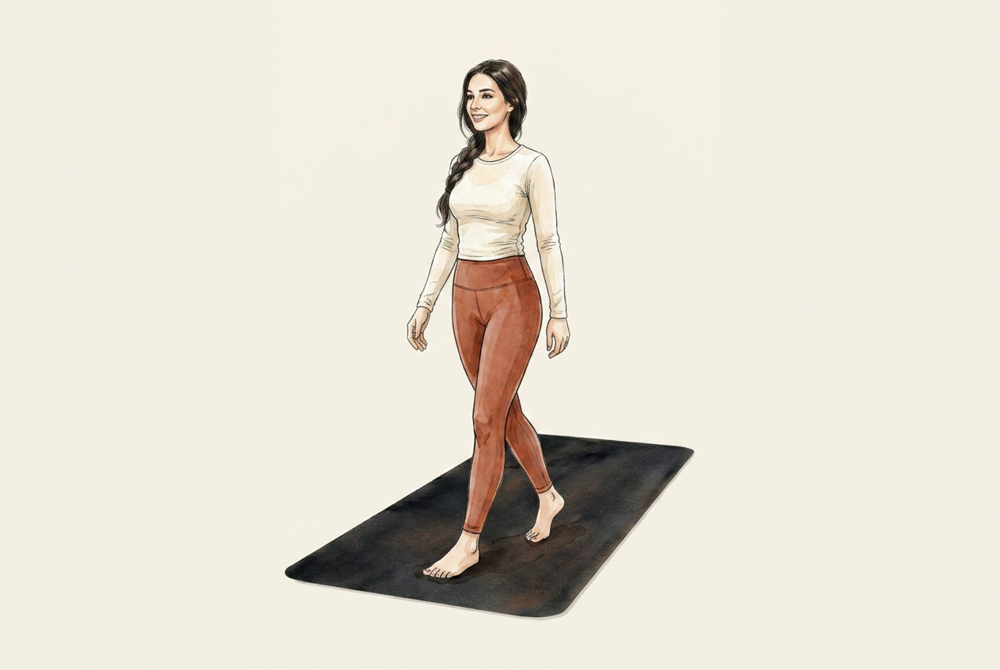
01 walk in
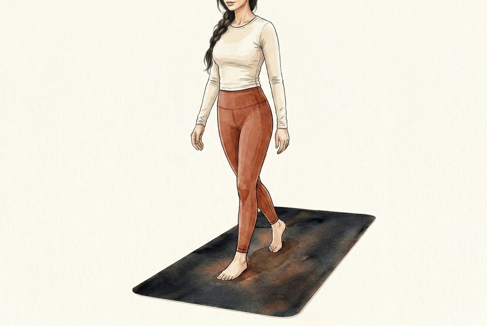
02 step on03 standtest
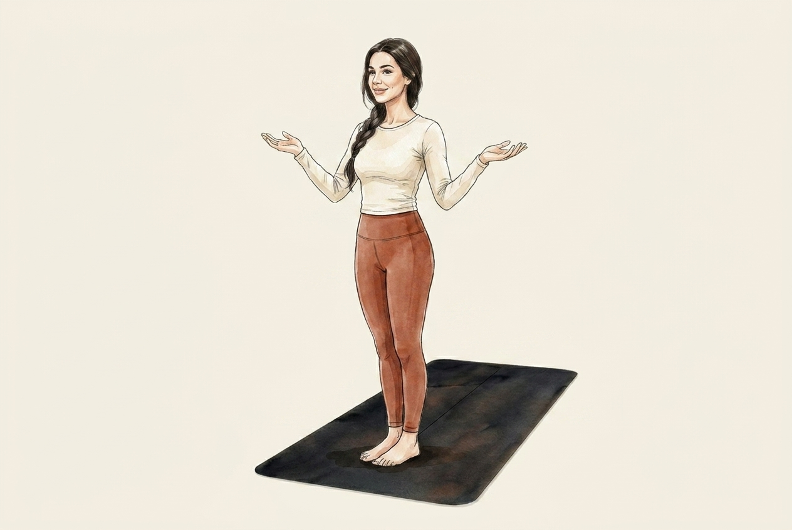
04 arms rise
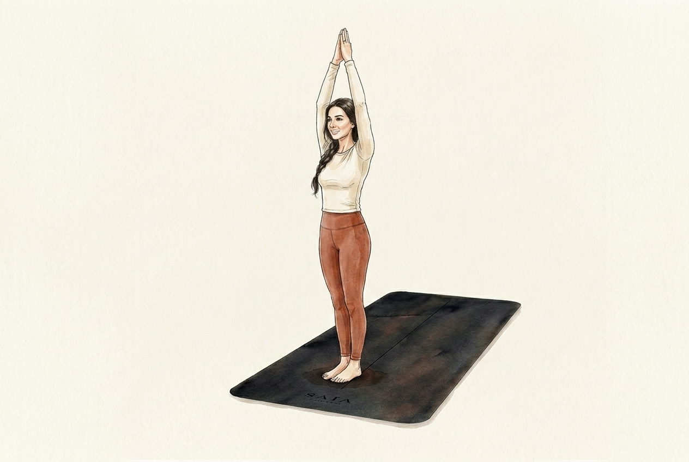
05 reach up
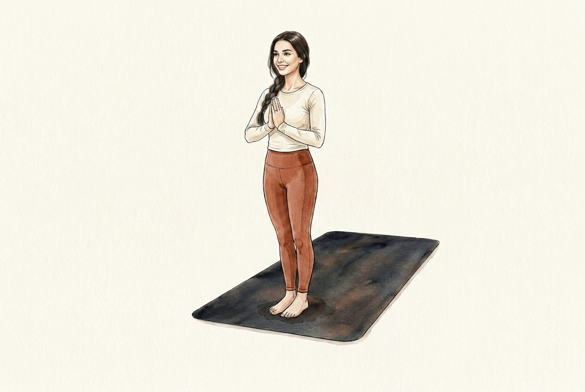
06 heart open
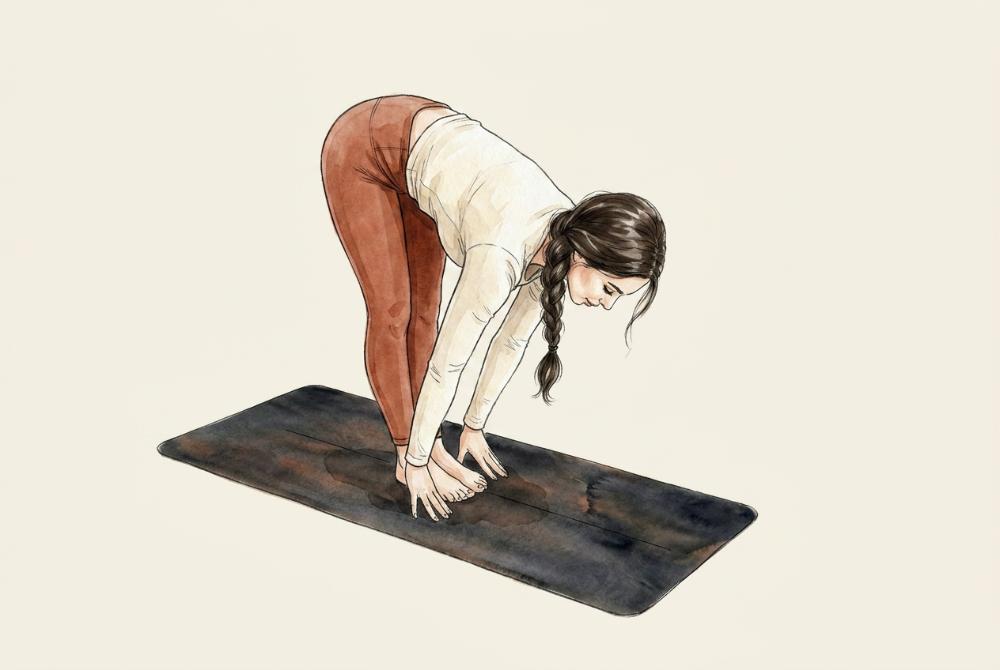
07 hinge
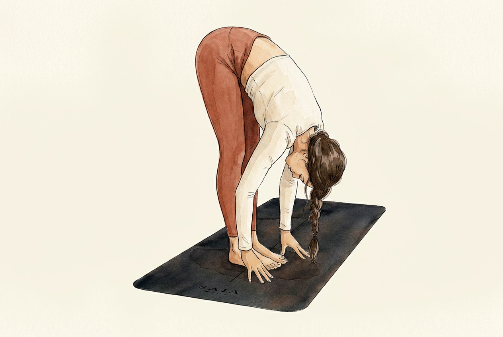
08 forward fold09 downward dogtest
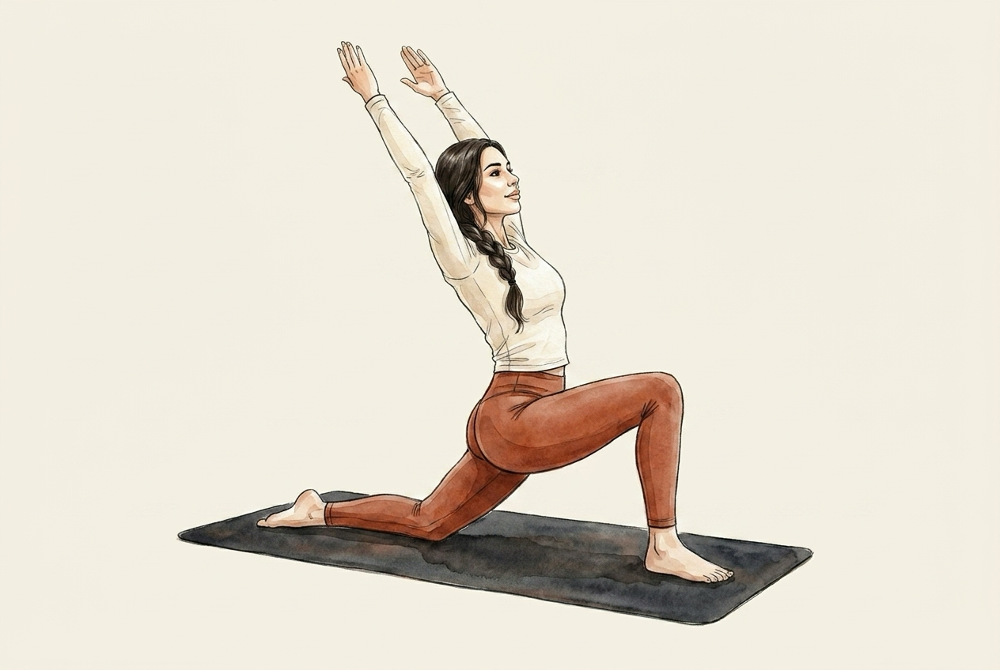
10 low lunge
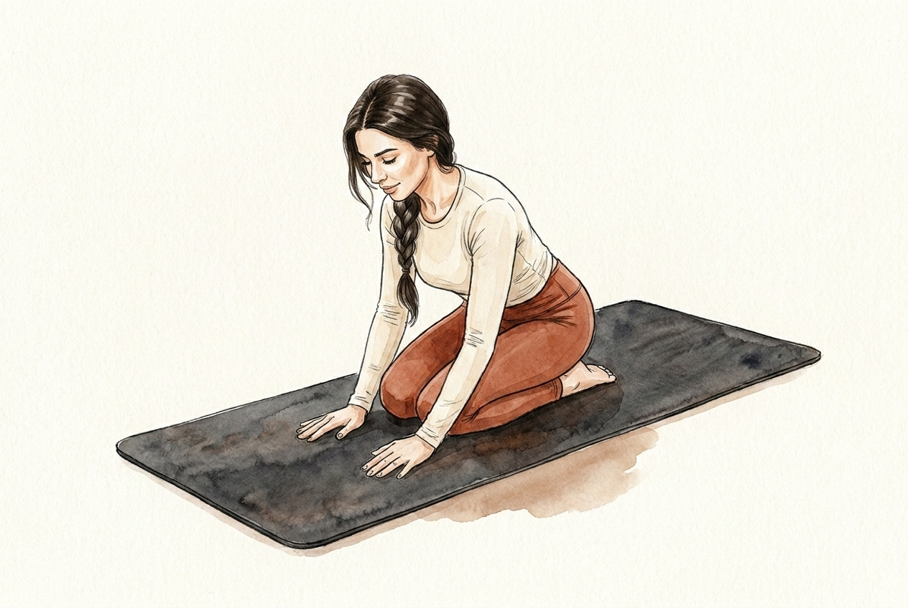
11 lower to seat
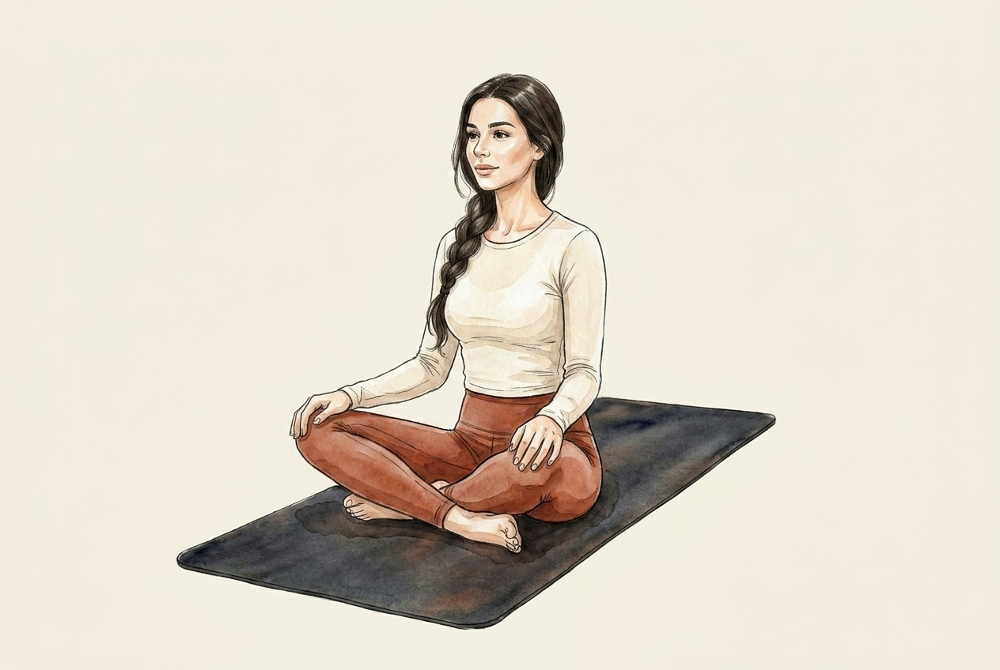
12 seated cross
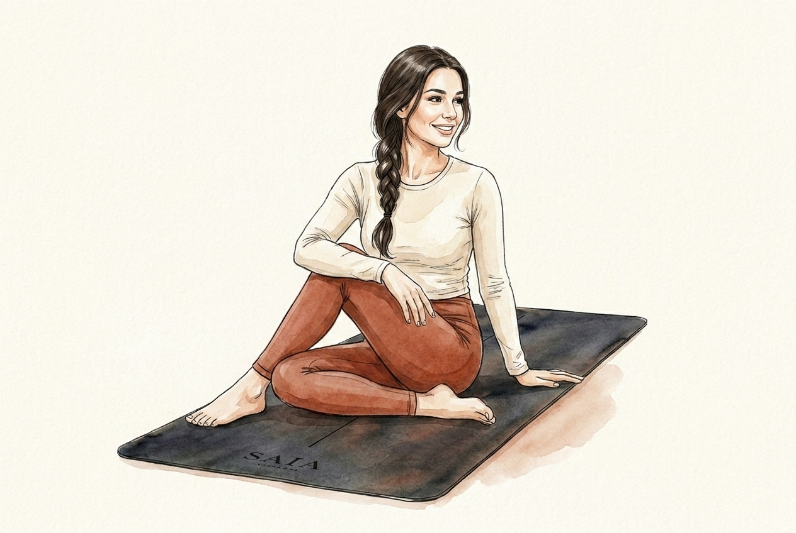
13 seated twist
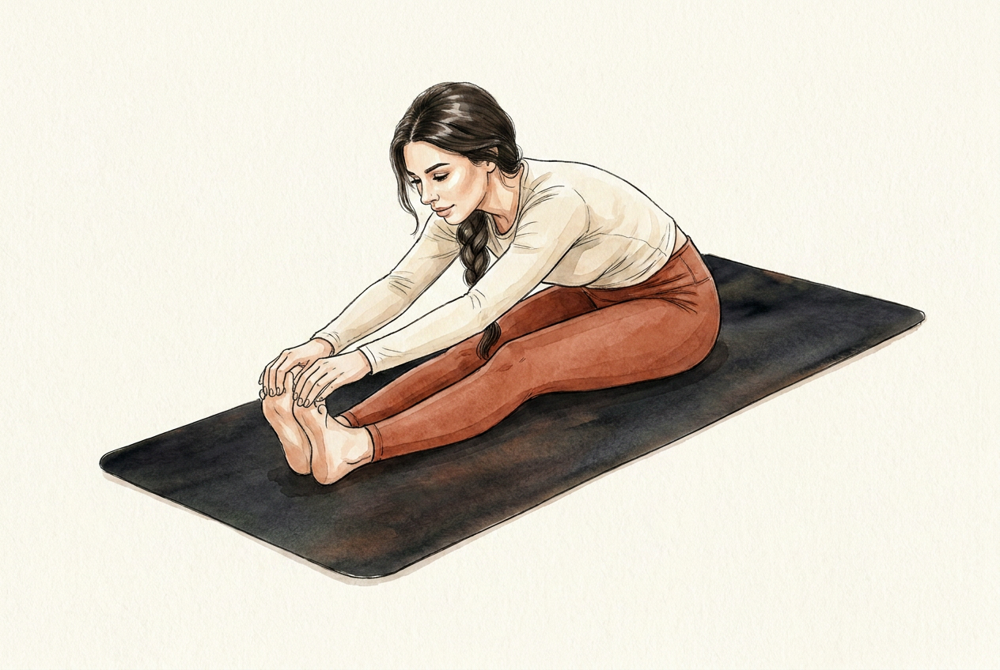
14 seated reach
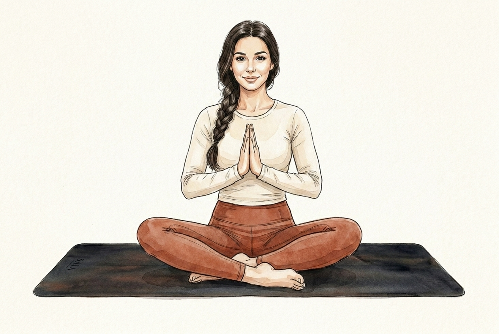
15 hands to heart
Reminder — before → after
Why this works now: flat figure on a steep mat (left) vs perspective-matched on the gentle mat (right).
current live (broken) beforeperspective-matched after
What to look for · (1) perspective — does she sit ON the mat in each, not floating? (2) grounding — feet/hands/seat believably on the surface? (3) identity — consistent face/hair/outfit across all 15? (4) any off poses to regenerate. Flag any numbers and I'll redo just those. Next step after your OK: bake → register all 15 to one mat rect → wire into the live handoff.